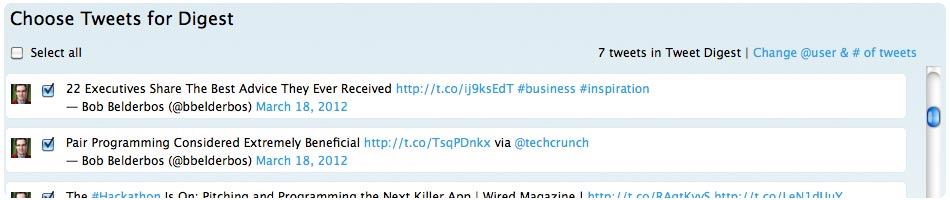
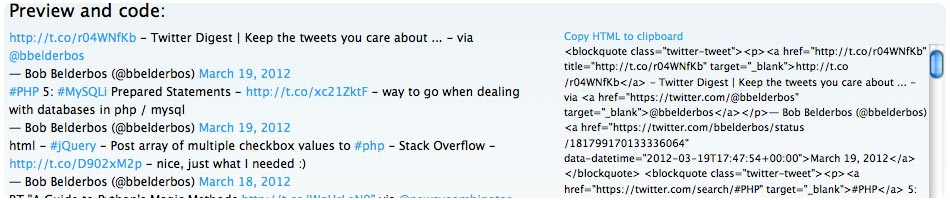
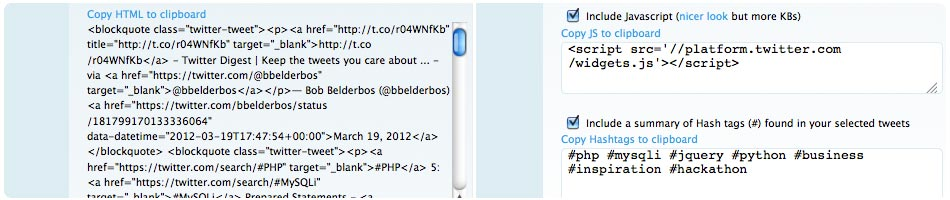
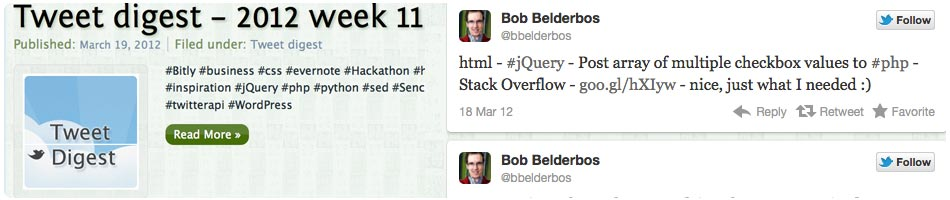

  </div><!-- end twitter -->
  
    <?php if(!$_GET): ?>
       <div id="slideshowWrapper">
         <h2 style="float: left;">It only takes 3 simple steps:</h2>
         <div id="title"></div>
         <div id="slideshow" class="pics">
            
            
            
            
        </div>
      </div>
    <?php endif; ?>
    
    <div id="footer">
      <a href='http://tweetdigest.net' target='go home'>Tweet Digest</a>
       &copy; 2012 
       <a href='http://bobbelderbos.com' title='site of developer' target='_blank'>Bob Belderbos</a>
	- <a href="http://bobbelderbos.com/2012/03/easy-way-compile-tweet-digest/">About</a>
        - <a id="commentToggle" href="index.php">Feedback</a> 

        <div id="shareHome">

          <div class="fb-like" data-send="true" data-href="http://tweetdigest.net" data-layout="button_count" data-width="100" data-show-faces="false"></div>

          <div id="buttons">
            <a href="http://twitter.com/home?status=http%3A%2F%2Ftweetdigest.net+-+Twitter+Digest+%7C+a+tool+to+compile+your+favorite+tweets+for+export+to+your+site+or+blog+-+via+%40bbelderbos" 
         target="_blank"></a>
            <a href="http://facebook.com/sharer.php?u=http://tweetdigest.net&t=Twitter+Digest+%7C+a+tool+to+compile+your+favorite+tweets+for+export+to+your+site+or+blog" 
         target="_blank"></a>
            <a href="javascript:(function(){var w=480;var h=480;var x=Number((window.screen.width-w)/2);var y=Number((window.screen.height-h)/2);window.open('https://plusone.google.com/_/+1/confirm?hl=en&url='+encodeURIComponent(location.href)+'&title='+encodeURIComponent(document.title),'','width='+w+',height='+h+',left='+x+',top='+y+',scrollbars=no');})();"></a>
          </div>
        </div>
         
    </div><!-- end footer -->
       
    <div id="feedback">
      <h2 id="fbHeader">Comments and feedback</h2>
      <div id="fbcomments">
        <div class="fb-comments" data-href="http://tweetdigest.net" data-num-posts="5" data-width="540"></div>
      </div>
      <div id="twcomment"></div>
    </div>
	    

  <script type="text/javascript" src="http://code.jquery.com/jquery-latest.js"></script>
  <script type="text/javascript" src="js/jquery.zclip.min.js"></script>
  <script type="text/javascript" src="js/jquery.cycle.lite.js"></script>
  <script type="text/javascript" src="http://platform.twitter.com/anywhere.js?id=zDhLjtTN58VUuEaQH41VsA&v=1"></script>
  <script type="text/javascript">
        twttr.anywhere(function (T) {
          T("#twcomment").tweetBox({
            height: 35,
            width: 390,
            defaultContent: '<?php echo "#tweetdigest (via @bbelderbos)"; ?>',
            label: '' 
          });
        });
  </script>
  
  
  <script type="text/javascript" src="js/scripts.js"></script>
  
  </body>
</html>
<?php exit; ?>
